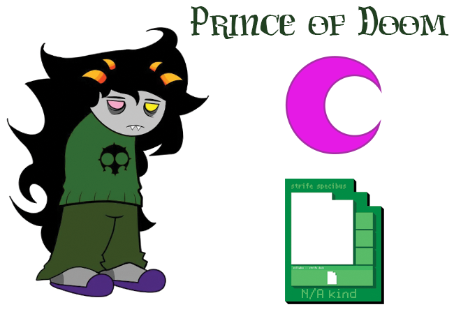

Basill was raised without a LUSUS, as their's had abandoned them alone in the forest while still a grub. They were eventually found by an adult troll of the BRONZE CASTE.
Basill is 9 SWEEPS old within the gold caste on ALTERNIA. While the planet was stil around, they used their PSIONIC FLAMES in mining sites to melt valuble metals, and warm workers during the long cold nights. They try their best to help others yet they can come off as HARSH as they say things as they see it, mostly disregarding how it would affect others. They tend to put others before themselves as less than others, this leads to them surpressing their struggles, often taking it out on others. Something happened to them while on DERSE, resulting in a deal being struck with their denizen, AKHLYS. The details of the deal aren't known by anyone else, but it seems like the denizen gave Basill an extreme insomnia.